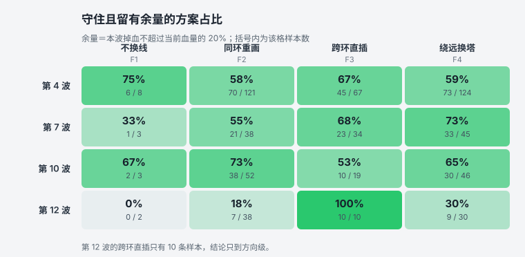

画线是这款游戏唯一的部署动作——塔预置在节点上，玩家连一条线把它们激活，线的形状决定这一波的防线。设计时的判断是「多条线可行、余量不同」，但没人量过：同一波到底有几种画法，哪一种最省血。这份自测用游戏真实的战斗循环跑了 640 条画线方案来回答。
这款游戏的伤害规则是「怪物只受塔的伤害，行进本身不掉血」。所以一条线的价值由两件事决定：它能激活几座塔，以及怪物在这条线上会走多久——走得越久，暴露在塔火下的时间越长。画线因此是纯粹的战术决策，值得用测量代替拍脑袋。
设计稿里写了「画线是战略层，定余量不定生死；多条线可行、余量不同」。这句话包含两个可以验证的断言：① 换成不同的线，这一波的过与不过基本不变；② 变的是余量。余量的操作定义是这一波结束时还剩多少血。下面用四条规则去检验它们。
| 项 | 做法 |
|---|---|
| 只变一个变量 | 前 W−1 波固定走同一条基准路线、同一套购买策略；到目标波次开打前取态势，此后只换画线，塔、遗物、金币、血全部不动 |
| 走真实循环 | 每一条候选线都用游戏自己的 startWave / updateWave 打完一整波，索敌、开火、伤害全部由游戏代码结算，不另写伤害公式 |
| 候选从地图长出来 | 在真实邻接图上先求最短路径，再在「最短 +2 段」以内枚举所有走法；至少穿 1 座塔，只能终止在出怪点，途中不许顺路再接第二个出怪点 |
| 能量按真实规则记账 | 可用能量 = 10 + 3×(W−1)，每一段消耗 1 点，新画的段数从余量里扣，不退款 |
| 判据 | 守住＝本波结束基地血量大于 0；余量＝守住且本波掉血不超过当前血量的 20%（负值表示这一波结算回血） |
| 抽样 | 按「比最短多走几段 × 塔数」分层，每格取 40 条；候选空间本身远大于样本（单格最高 2,299 条），所以结论停在家族级 |
| 种子 | 种子地图是游戏自带的 12 张随机图的固定序列，取前 8 张 |
分类只看「这一波新画的那一段」，因为整条线接了几个出怪点是历史决定的，拿它分类会把「不换线」全判成多点：
| 形态 | 这一波怎么画 |
|---|---|
| F1 不换线 | 沿用上一波的线，对照 |
| F2 同环重画 | 最短新增段，新终点与当前末端在同一个环 |
| F3 跨环直插 | 最短新增段，新终点跳到更外一环的出怪点 |
| F4 绕远换塔 | 比最短段多走 1–4 段，用来串更多塔 |
| 波次 | 种子数 | 抽样条数 | 守住 | 留有余量 | 剩余能量（中位） |
|---|---|---|---|---|---|
| 第 4 波 | 8 | 320 | 320（100%） | 194（61%） | 11 |
| 第 7 波 | 3 | 120 | 101（84%） | 78（65%） | 20 |
| 第 10 波 | 3 | 120 | 120（100%） | 80（67%） | 22 |
| 第 12 波 | 2 | 80 | 80（100%） | 26（33%） | 27 |

塔数与「这一波掉多少血」的相关系数：第 4 波 −0.50、第 7 波 −0.59，到第 10 波 +0.06、第 12 波 +0.07。前期多串一座塔就是实打实的火力；后期火力已经饱和，多一座塔几乎没有边际收益，决定余量的是把线接到哪个出怪点。
数字上也对得上：留有余量的方案，第 4 波平均 6.1 座塔，没余量的只有 4.4 座；到第 12 波，两组都是 11.1 座，塔数彻底失去分辨力。
第 12 波里跨环直插 10 条抽样全部留有余量，掉血中位数是 −1（这一波结算回血）；同环重画的 38 条里只有 7 条有余量，掉血中位数 26。接外环会让整波怪变多，这是设计里写明的代价；实测外环出怪点进场后要走完整条外环到内环的线，暴露时间最长，怪变多被塔火时间补回来了。
这一族只有 10 条样本、2 张种子地图，结论只到方向级。
第 7 波是三张种子里唯一出现分化的波次。同一张种子地图上，「不换线」会直接打穿，而同一波绕远换塔的 12 条方案全部守住——多串 1–4 段就能把死局救回来。另一张种子反过来：「不换线」守得住，8 条换线方案反而死。
换线在这里有真实的下行风险，选错线会把本来稳过的一波打穿。这与「容量内每波可放心重构」的设计假设有出入：重构不吃资源，但吃判断。
抽样里剩余能量的中位数是 11–27 点，而基准路线只用了 4–12 段。第 4 波就给了 19 点预算，够画一条两倍长的线。画线的约束是「哪条边值得连」，不是「能量够不够」——这支持把画线做成读图要素，而非资源分配。